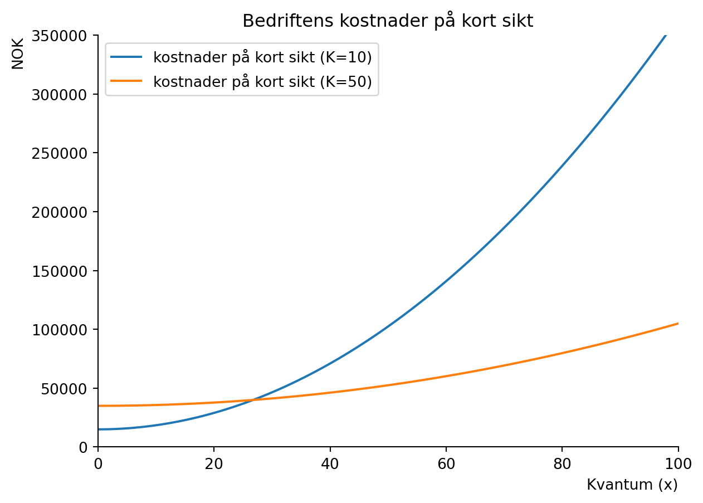

For å gå tilbake til hovedsiden trykker du her. (NB: Dette arbeidskravet mistet jeg originalfilen til så mesteparten av koden er tatt fra løsningsforslaget og kodet av Derek J Clark.)
2. Kostnader på kort sikt
Vi skal skrive kostnadsfunksjonen på kort sikt som en funksjon av hvor mange enheter bedriften produserer. På kort sikt er det minst én produksjonsfaktor som er fast.
Oppgave
En bedrift produserer goder med følgende produktfunksjon:
\[\begin{equation}
x = f(N,K)=N^{0.5}K^{0.5}\tag{1}
\end{equation}\]
På kort sikt har bedriften tilgang til begrenset kapital \(K_0=10\). Prisen per enhet kapital er fast \(r=500\) NOK, mens én time med arbeidskraft koster \(w=350\) NOK. På kort sikt kan bedriften velge hvor mange timer arbeidskraft som tilsettes. Bedriften leier et bygg til produksjonen av produktet, og dette koster 10 000 NOK (faste kostnader).
a) Finn et utrykk for bedriftens totale produksjonskostnad på kort sikt som en funksjon av produsert mengde og kapitalbeholdningen: \(C_s(x, K_0)\). Tegn denne funksjon i en figur med produksjon på den horisontale aksen. Tegn også kostnadsfunksjonen som oppstår når kapitalbeholdningen økes til \(K_1=50\). Kommenter dine funn.
Code
import sympy as spimport numpy as npfrom matplotlib import pyplot as pltN, K, X= sp.symbols('N K X', positive=True, real=True) # oppgave adef x(N,K):return (N**0.5)*(K**0.5)#kostnad på kort siktdef C_s(N,K):return350*N+(500*K)+10000N_sol=sp.solve (x(N,K)-X,N)[0]N_sol
\(\displaystyle \frac{X^{2}}{K}\)
Code
C_s_XK=C_s(N_sol,K)C_s_XK
\(\displaystyle 500 K + 10000 + \frac{350 X^{2}}{K}\)
Code
# gjør om fra sympy slik at vi kan tegne kostnadsfunksjonenC_s_fn=sp.lambdify( (X,K), C_s_XK)C_s_fn(X,K)
\(\displaystyle 500 K + 10000 + \frac{350 X^{2}}{K}\)
Code
x_num=np.linspace(0.01,100,100)def create_ax(): fig, ax = plt.subplots() ax.set_ylabel('NOK', loc='top') ax.set_xlabel('Kvantum (x)', loc='right') ax.spines['top'].set_color('none') ax.spines['right'].set_color('none')return fig, axfig, ax = create_ax()ax.set(ylim=(0,350000))ax.set(xlim=(0,100))ax.plot(x_num, C_s_fn(x_num, 10), label ='kostnader på kort sikt (K=10)')ax.plot(x_num, C_s_fn(x_num, 50), label ='kostnader på kort sikt (K=50)')ax.set_title('Bedriftens kostnader på kort sikt')ax.legend(loc='best');

I en ny figur tegn totale gjennomsnittskostnader på kort sikt, variabler gjennomsnittskostnader på kort sikt, og grensekostnaden på kort sikt. Kommenter og forklar forholdet mellom total og variabel gjennomsnittskostnad og grensekostnaden.